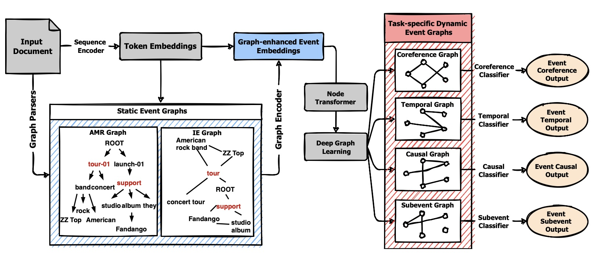
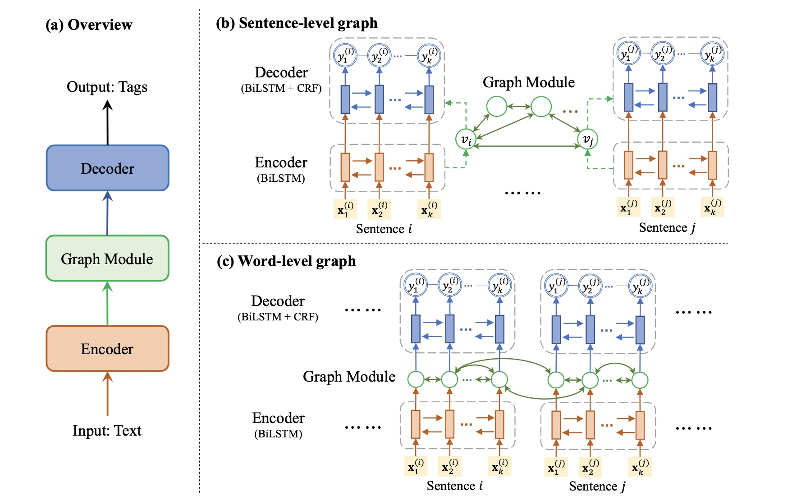
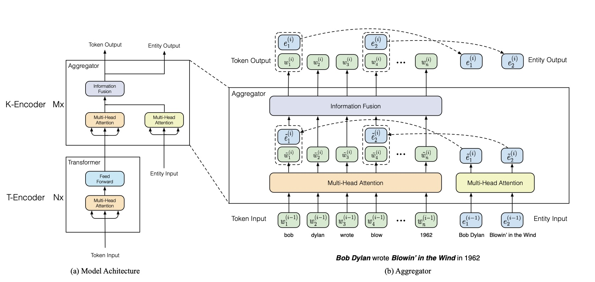
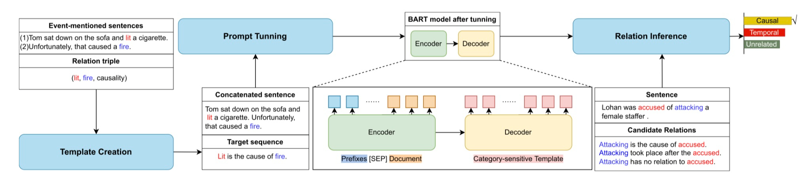
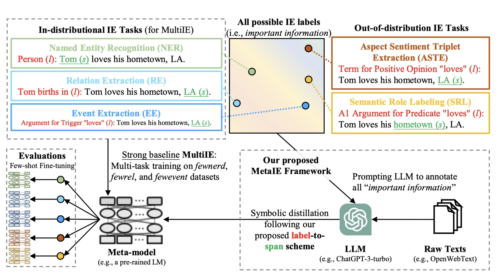

Event-Event Relation Extraction
1. Related Definitions
事件： An event is an occurrence of societal importance, typically happening at a specific time and location, involving a set of participants. It can be represented as \((action\; or \;status, persons, time, location)\), action or status can be also called as a trigger word. Besides, in a graph, a node with a tag written its trigger word and with other subsidiary information nodes connected can represent a event briefly.

事件关系抽取： 即抽取事件之间的关系，事件之间的关系包括但不限于因果关系(Casual Relation)，子事件关系(Subevent Relation)，时序关系(Temporal Relation)，等同关系等，这些关系大类里又可以细分为诸多子关系。比如，时序关系可以分为before，after和overlapping等子关系。
事件因果关系抽取： 即抽取事件之间的因果关系(Casual Relation)，因果关系也可以细分为explicit casualty和implicit casualty等子关系。
2. 事件抽取与事件关系抽取的相关工作
GraphERE  此模型可以用于抽取文本中的一系列events及其关系，首先，包含多个events的文本被输入，然后相应的解析器解析成两种不同的Graphs (AMR and IE)，再对每一个事件进行增强嵌入得到event向量，最后通过transformer和Deep Graph Learning获得关系抽取结果图。
GraphIE 可以给定一句包含事件的语句作为模型输入，模型通过decoder输出各个token的tag，即：某词是事件的触发词，某词是事件的论元… 然后就可以使用这些知识构建图。 
ERNIE ERNIE是一种新的预训练模型，可看作Transformer的decoder架构的一种变体，可以结合大规模文本语料库和知识图谱(KGs)，利用知识图谱中丰富的结构化知识事实来增强预训练模型的语言理解能力。  如图所示，此模型用于输入一段文本与文本中输入文本中某一些tokens对应的entities，输出一段文本与entity对应的输入tokens的位置，输出的文本可以是对输入mask的推测，对输入的下一句话的预测等。实验也证明它比BERT等baseline模型效果要好。
Prompt-based event relation identification with Constrained Prefix Attention mechanism 本文提出了一种新的事件关系抽取框架，输入两个分别包含1个event的语句，系统即可判断出两个event之间的并且属于\(relation\;set=[casual, \;temporal, \;unrelated]\) 的关系。  在创新点方面，本文主要提出了两点改进：
- 在输入中添加包含一系列关系名称的 \(prefix=relation\;set\) ，并在BART模型中添加prefix-biased fully-connected attention层，让关系对应的attention bias可以体现在每一个输入的token中。
- Inspired by ZLPR， 作者提出了一种特别的损失函数，可以考虑中间过程并且更加关注正确的prefix。除此以外，交叉熵损失函数也被作为最终损失函数的一部分。
- MetaIE
- 此模型可以输入一段文本，输出序列标注和spans。
- 此模型思路相对较为简单，即通过Symbolic Knowledge Distillation将参数量大的Teacher Model变为Student Model。
- 此模型使用的Teacher Model是GPT-3.5-turbo via LLM Prompting with in-context learning，Student Model是RoBERTa-Large。
- 在构建训练集时，本文使用大语言模型对海量的数据进行提问整合，减小了构建数据集的难度。
- 虽然此方法能够通过大模型训练出效果较好的小模型，但是，此方法也会将大模型的bias带入小模型。
 - Selecting Optimal Context Sentences for Event-Event Relation Extraction 此模型可以输入一段document并标注出event的触发词语，输出event之间的关系。在创新方面，此模型主要抓住大语言模型无法理解长文本这一问题作出改进，提取出输入的文本中不包含trigger word的但是与事件关系有关的语句作为关键语句，将关键语句和包含trigger word的语句整合送入大语言模型得到抽取结果。
- Mastering Context-to-Label Representation Transformation for
Event Causality Identification with Diffusion Models
此模型可以输入两句描述event的语句，输出它们之间的关系。此模型受启发于CV领域的diffusion
model
(先添加高斯噪声，后逆向还原图像)，训练出一个可以将文本中的“噪声”（不相关文本）剔除的模型。

3. Summary
- 任务形式差别 在任务形式方面，有些是给定了带有event的语句要求抽取出其关系；有些是给定一段文本，要求先抽取出event后找出其关系。
- 方法差别 在实现方法方面，一般是将对话大语言模型，预训练模型(PLM)，知识图谱，提示工程中的几个内容相结合成新的模型实现。
4. Current Challenges
- 因果关系中的explicit casualty相对较容易提取，但是implicit casualty因为没有明确的关键词提示较难提取。
- 目前模型需要大规模的训练集进行训练，然而目前训练集规模普遍偏小。eg: the largest existing dataset Event Story Line only contains 258 documents, and the training data in practical application scenarios is scarcer than Event Story Line.
- 目前以大语言模（如GhatGPT）为基础的事件及其关系抽取模型存在bias与hallucination（大模型幻觉），并且在模型中添加In Context Learning或者Chain of Thoughts后会加剧hallucination这一现象。除此以外，大模型对提问的prompt非常敏感，很难调整到合适的prompt并且缺乏理论依据。
- 可能输入语句中存在大量不相关的内容导致大量noise产生，从而影响模型效果。
- 有一些事件使用过长的语句描述并且其关系也要结合长上下文进行理解，然而目前大语言模型对长上下文的理解能力有限，比如BERT模型的输入最长只有512个token。
- 有一些文本中两个事件的触发词语之间的distance较长，即两个触发词之间相隔的token数较多，模型难以抽取之间的关系。
- 对于一些zero-shot的问题无法得到较好的抽取结果